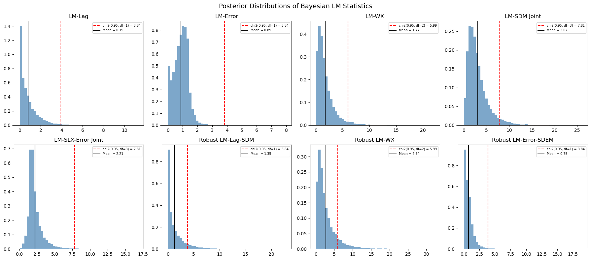

Bayesian LM Tests for SDM/SDEM Specification¶
This notebook demonstrates the 6 new Bayesian LM test functions in bayespecon for testing spatial model specification in the SDM (Spatial Durbin Model) and SDEM (Spatial Durbin Error Model) directions.
Background¶
Classical LM Tests (Koley & Bera, 2024)¶
The classical Lagrange Multiplier (LM) framework for spatial models tests:
Test |
H₀ |
Alternative |
df |
|---|---|---|---|
LM-Lag |
ρ = 0 |
SAR |
1 |
LM-Error |
λ = 0 |
SEM |
1 |
LM-WX |
γ = 0 |
SLX |
\(k_{wx}\) |
LM-SDM (joint) |
ρ = 0, γ = 0 |
SDM |
\(1 + k_{wx}\) |
LM-SLX-Error (joint) |
λ = 0, γ = 0 |
SDEM |
\(1 + k_{wx}\) |
Robust LM-Lag-SDM |
ρ = 0 (robust to γ) |
SDM |
1 |
Robust LM-WX |
γ = 0 (robust to ρ) |
SDM |
\(k_{wx}\) |
Robust LM-Error-SDEM |
λ = 0 (robust to γ) |
SDEM |
1 |
Bayesian Robust Chi-Squared Test (Dogan et al., 2021)¶
The Bayesian analogue replaces the classical score with the posterior mean of the outer product of scores and uses the Neyman orthogonal score for robust tests:
where the Neyman-adjusted score is:
This adjustment ensures the test is robust to local misspecification in the nuisance parameter φ, following Bera & Yoon (1993) and Dogan et al. (2021, Proposition 3).
import libpysal
import matplotlib.pyplot as plt
import numpy as np
import pandas as pd
from spreg import OLS as SpregOLS
from spreg import LMtests as SpregLMtests
from bayespecon import (
OLS,
SAR,
SLX,
bayesian_lm_error_test,
bayesian_lm_lag_test,
bayesian_lm_sdm_joint_test,
bayesian_lm_slx_error_joint_test,
bayesian_lm_wx_test,
bayesian_robust_lm_error_sdem_test,
bayesian_robust_lm_lag_sdm_test,
bayesian_robust_lm_wx_test,
)
1. Generate Spatial Data¶
We create a simple spatial DGP with known parameters to validate the tests. Under the null hypothesis (no spatial effects), the Bayesian LM statistics should be small with high p-values.
import geopandas as gpd
from libpysal.graph import Graph
from libpysal.weights import Rook
# Generate data under H0: no spatial effects
np.random.seed(42)
# Load Columbus dataset for spatial weights
columbus_path = libpysal.examples.get_path("columbus.shp")
gdf = gpd.read_file(columbus_path)
# Create a Graph (modern libpysal API) for bayespecon models
# Row-standardize the graph so spatial models work correctly
g = Graph.build_contiguity(gdf, rook=True).transform("r")
n = g.n
# Legacy W for spreg comparison
w_spreg = Rook.from_shapefile(columbus_path)
w_spreg.transform = "r"
# Get sparse and dense W matrices
W_sparse = g.sparse.tocsr().astype(np.float64)
W_dense = np.array(W_sparse.todense())
# Design matrix
k = 3
X = np.column_stack([np.ones(n), np.random.normal(size=(n, k - 1))])
beta_true = np.array([1.0, 2.0, -1.5])
y = X @ beta_true + np.random.normal(scale=1.0, size=n)
print(f"W shape: {W_sparse.shape}, nnz: {W_sparse.nnz}")
W shape: (49, 49), nnz: 200
/home/runner/micromamba/envs/test/lib/python3.14/site-packages/libpysal/io/iohandlers/pyShpIO.py:247: FutureWarning: Objects based on the `Geometry` class will deprecated and removed in a future version of libpysal.
shp = self.type(vertices)
/home/runner/micromamba/envs/test/lib/python3.14/site-packages/libpysal/cg/shapes.py:1408: FutureWarning: Objects based on the `Geometry` class will deprecated and removed in a future version of libpysal.
self._part_rings = [Ring(vertices)]
2. Fit Null Models¶
The Bayesian LM tests require posterior draws from the null model (the model under H₀). Different tests use different null models:
LM-WX test: SAR model (includes ρ but not γ)
LM-SDM joint test: OLS model (no spatial params)
LM-SLX-Error joint test: OLS model (no spatial params)
Robust LM-Lag-SDM: SLX model (includes γ but not ρ)
Robust LM-WX: SAR model (includes ρ but not γ)
Robust LM-Error-SDEM: SLX model (includes γ but not λ)
# Fit OLS model (null for joint tests)
ols_model = OLS(y=y, X=X, W=g)
ols_model.fit(draws=5000, tune=5000, chains=4, random_seed=42)
# Fit SAR model (null for LM-WX and robust LM-WX)
sar_model = SAR(y=y, X=X, W=g)
sar_model.fit(draws=5000, tune=5000, chains=4, random_seed=42)
# Fit SLX model (null for robust LM-Lag-SDM and robust LM-Error-SDEM)
slx_model = SLX(y=y, X=X, W=g)
slx_model.fit(draws=5000, tune=5000, chains=4, random_seed=42)
Initializing NUTS using jitter+adapt_diag...
Multiprocess sampling (4 chains in 2 jobs)
NUTS: [beta, sigma]
Sampling 4 chains for 5_000 tune and 5_000 draw iterations (20_000 + 20_000 draws total) took 21 seconds.
Initializing NUTS using jitter+adapt_diag...
Multiprocess sampling (4 chains in 2 jobs)
NUTS: [rho, beta, sigma]
Sampling 4 chains for 5_000 tune and 5_000 draw iterations (20_000 + 20_000 draws total) took 23 seconds.
Initializing NUTS using jitter+adapt_diag...
Multiprocess sampling (4 chains in 2 jobs)
NUTS: [beta, sigma]
Sampling 4 chains for 5_000 tune and 5_000 draw iterations (20_000 + 20_000 draws total) took 22 seconds.
/home/runner/micromamba/envs/test/lib/python3.14/site-packages/rich/live.py:260: UserWarning: install "ipywidgets"
for Jupyter support
warnings.warn('install "ipywidgets" for Jupyter support')
/home/runner/micromamba/envs/test/lib/python3.14/site-packages/rich/live.py:260: UserWarning: install "ipywidgets"
for Jupyter support
warnings.warn('install "ipywidgets" for Jupyter support')
/home/runner/micromamba/envs/test/lib/python3.14/site-packages/rich/live.py:260: UserWarning: install "ipywidgets"
for Jupyter support
warnings.warn('install "ipywidgets" for Jupyter support')
-
<xarray.Dataset> Size: 1MB Dimensions: (chain: 4, draw: 5000, coefficient: 5) Coordinates: * chain (chain) int64 32B 0 1 2 3 * draw (draw) int64 40kB 0 1 2 3 4 5 ... 4994 4995 4996 4997 4998 4999 * coefficient (coefficient) <U4 80B 'x0' 'x1' 'x2' 'W*x1' 'W*x2' Data variables: beta (chain, draw, coefficient) float64 800kB 1.04 2.097 ... -0.1659 sigma (chain, draw) float64 160kB 1.011 1.042 1.002 ... 1.002 1.081 Attributes: created_at: 2026-04-29T01:18:26.784621+00:00 arviz_version: 0.23.4 inference_library: pymc inference_library_version: 5.28.4 sampling_time: 22.04980731010437 tuning_steps: 5000 -
<xarray.Dataset> Size: 3MB Dimensions: (chain: 4, draw: 5000) Coordinates: * chain (chain) int64 32B 0 1 2 3 * draw (draw) int64 40kB 0 1 2 3 4 ... 4996 4997 4998 4999 Data variables: (12/18) process_time_diff (chain, draw) float64 160kB 0.0004098 ... 0.0004627 reached_max_treedepth (chain, draw) bool 20kB False False ... False False perf_counter_start (chain, draw) float64 160kB 441.7 441.7 ... 451.1 n_steps (chain, draw) float64 160kB 7.0 3.0 7.0 ... 7.0 7.0 step_size (chain, draw) float64 160kB 0.48 0.48 ... 0.5899 diverging (chain, draw) bool 20kB False False ... False False ... ... index_in_trajectory (chain, draw) int64 160kB -6 -2 -2 7 -3 ... 2 4 4 4 4 tree_depth (chain, draw) int64 160kB 3 2 3 3 3 3 ... 3 3 3 3 3 3 energy (chain, draw) float64 160kB 155.7 152.1 ... 148.4 energy_error (chain, draw) float64 160kB -0.03968 ... -0.03155 max_energy_error (chain, draw) float64 160kB -0.4443 ... -0.1551 lp (chain, draw) float64 160kB -151.3 -146.9 ... -146.9 Attributes: created_at: 2026-04-29T01:18:26.812185+00:00 arviz_version: 0.23.4 inference_library: pymc inference_library_version: 5.28.4 sampling_time: 22.04980731010437 tuning_steps: 5000 -
<xarray.Dataset> Size: 784B Dimensions: (obs_dim_0: 49) Coordinates: * obs_dim_0 (obs_dim_0) int64 392B 0 1 2 3 4 5 6 7 ... 42 43 44 45 46 47 48 Data variables: obs (obs_dim_0) float64 392B 2.206 -0.2238 -0.5325 ... 3.193 -0.03629 Attributes: created_at: 2026-04-29T01:18:26.817358+00:00 arviz_version: 0.23.4 inference_library: pymc inference_library_version: 5.28.4
3. Non-Robust Bayesian LM Tests¶
These tests assume the nuisance parameters are correctly specified (zero). They are the Bayesian analogues of the classical LM tests from Koley & Bera (2024).
# Non-robust Bayesian LM tests
non_robust_results = pd.DataFrame(
[
bayesian_lm_lag_test(ols_model).to_series(),
bayesian_lm_error_test(ols_model).to_series(),
bayesian_lm_wx_test(sar_model).to_series(),
bayesian_lm_sdm_joint_test(ols_model).to_series(),
bayesian_lm_slx_error_joint_test(ols_model).to_series(),
],
index=["LM-Lag", "LM-Error", "LM-WX", "LM-SDM Joint", "LM-SLX-Error Joint"],
)
non_robust_results
| lm_samples | mean | median | credible_interval | bayes_pvalue | test_type | df | n_draws | k_wx | |
|---|---|---|---|---|---|---|---|---|---|
| LM-Lag | [0.05438780176430598, 0.12892006158671354, 0.6... | 0.792888 | 0.507795 | (0.0016704770488899271, 3.175379024403315) | 0.373228 | bayesian_lm_lag | 1 | 20000 | NaN |
| LM-Error | [0.5291418019346246, 1.1608187175458191, 0.683... | 0.893415 | 0.923826 | (0.02241236639811323, 1.791119515343001) | 0.344553 | bayesian_lm_error | 1 | 20000 | NaN |
| LM-WX | [4.278251519559123, 8.313715082618135, 5.78104... | 1.771559 | 1.296318 | (0.10541183805920701, 6.308718750885839) | 0.412393 | bayesian_lm_wx | 2 | 20000 | 2.0 |
| LM-SDM Joint | [1.2730813044904596, 1.2487701293987468, 3.087... | 3.023320 | 2.445503 | (0.43169965080395745, 9.033304066750535) | 0.388044 | bayesian_lm_sdm_joint | 3 | 20000 | 2.0 |
| LM-SLX-Error Joint | [1.8516984729999635, 1.8486886672244665, 3.375... | 2.208875 | 1.917272 | (0.8737216702109508, 5.072604027352293) | 0.530202 | bayesian_lm_slx_error_joint | 3 | 20000 | 2.0 |
4. Robust Bayesian LM Tests (Neyman Orthogonal Score)¶
These tests use the Neyman orthogonal score adjustment from Dogan et al. (2021, Proposition 3) to ensure robustness against local misspecification in the nuisance parameter. This is the key innovation over the classical Bera-Yoon (1993) approach.
The adjustment removes the correlation between the test parameter score and the nuisance parameter score:
where \(J_{\cdot \cdot \cdot \sigma}\) denotes information matrix blocks partitioned on \(\sigma^2\).
# Robust Bayesian LM tests (Neyman orthogonal score)
robust_results = pd.DataFrame(
[
bayesian_robust_lm_lag_sdm_test(slx_model).to_series(),
bayesian_robust_lm_wx_test(sar_model).to_series(),
bayesian_robust_lm_error_sdem_test(slx_model).to_series(),
],
index=["Robust LM-Lag-SDM", "Robust LM-WX", "Robust LM-Error-SDEM"],
)
robust_results
| lm_samples | mean | median | credible_interval | bayes_pvalue | test_type | df | n_draws | k_wx | |
|---|---|---|---|---|---|---|---|---|---|
| Robust LM-Lag-SDM | [0.31343865303103785, 1.1844278293892685, 0.02... | 1.354983 | 0.683610 | (0.0016868514458934093, 6.326172675613349) | 0.244409 | bayesian_robust_lm_lag_sdm | 1 | 20000 | 2 |
| Robust LM-WX | [3.9299299896263027, 14.274277607883626, 9.795... | 2.736417 | 1.854973 | (0.198006880160169, 10.3595183096505) | 0.254563 | bayesian_robust_lm_wx | 2 | 20000 | 2 |
| Robust LM-Error-SDEM | [0.3359730525265724, 0.7497300160881413, 0.075... | 0.750659 | 0.588434 | (0.003480105737470354, 2.653017987848805) | 0.386268 | bayesian_robust_lm_error_sdem | 1 | 20000 | 2 |
5. Posterior Distribution of LM Statistics¶
A key advantage of the Bayesian approach is that we get a full posterior distribution of the LM statistic, not just a point estimate. This allows us to compute credible intervals and posterior probabilities.
from scipy import stats as sp_stats
fig, axes = plt.subplots(2, 4, figsize=(18, 8))
all_results = pd.concat([non_robust_results, robust_results])
result_objects = [
bayesian_lm_lag_test(ols_model),
bayesian_lm_error_test(ols_model),
bayesian_lm_wx_test(sar_model),
bayesian_lm_sdm_joint_test(ols_model),
bayesian_lm_slx_error_joint_test(ols_model),
bayesian_robust_lm_lag_sdm_test(slx_model),
bayesian_robust_lm_wx_test(sar_model),
bayesian_robust_lm_error_sdem_test(slx_model),
]
for ax, (name, res) in zip(axes.flat, zip(all_results.index, result_objects)):
ax.hist(res.lm_samples, bins=50, density=True, alpha=0.7, color="steelblue")
chi2_ref = sp_stats.chi2.ppf(0.95, res.df)
ax.axvline(
chi2_ref,
color="red",
linestyle="--",
label=f"chi2(0.95, df={res.df}) = {chi2_ref:.2f}",
)
ax.axvline(res.mean, color="black", linestyle="-", label=f"Mean = {res.mean:.2f}")
ax.set_title(name)
ax.legend(fontsize=7)
plt.suptitle("Posterior Distributions of Bayesian LM Statistics", fontsize=14)
plt.tight_layout()
plt.show()

6. Comparison with Classical spreg LM Tests¶
We compare the Bayesian LM statistics (posterior mean) with the classical point estimates. Under flat priors, the Bayesian and classical tests should converge.
# Classical spreg LM tests
ols_spreg = SpregOLS(y, X)
lm_spreg = SpregLMtests(ols_spreg, w_spreg)
spreg_map = {
"LM-Lag": "LM-Lag",
"LM-Error": "LM-Error",
"LM-WX": "LM-WX",
"LM-SDM Joint": "LM-SDM Joint",
"LM-SLX-Error Joint": "LM-SLX-Error Joint",
"Robust LM-Lag-SDM": "Robust LM-Lag-SDM",
"Robust LM-WX": "Robust LM-WX",
}
spreg_results = {
"LM-Lag": lm_spreg.lml,
"LM-Error": lm_spreg.lme,
"LM-WX": lm_spreg.lmwx,
"LM-SDM Joint": lm_spreg.lmspdurbin,
"LM-SLX-Error Joint": lm_spreg.lmslxerr,
"Robust LM-Lag-SDM": lm_spreg.rlmdurlag,
"Robust LM-WX": lm_spreg.rlmwx,
}
# Build comparison DataFrame
all_results = pd.concat([non_robust_results, robust_results])
comparison_rows = []
for bname in all_results.index:
sname = spreg_map.get(bname)
row = all_results.loc[bname]
if sname and sname in spreg_results:
s_stat, s_pval = spreg_results[sname]
comparison_rows.append(
{
"bayes_mean": row["mean"],
"spreg_stat": s_stat,
"bayes_pvalue": row["bayes_pvalue"],
"spreg_pvalue": s_pval,
}
)
else:
comparison_rows.append(
{
"bayes_mean": row["mean"],
"spreg_stat": np.nan,
"bayes_pvalue": row["bayes_pvalue"],
"spreg_pvalue": np.nan,
}
)
comparison_df = pd.DataFrame(comparison_rows, index=all_results.index)
comparison_df
| bayes_mean | spreg_stat | bayes_pvalue | spreg_pvalue | |
|---|---|---|---|---|
| LM-Lag | 0.792888 | 0.886074 | 0.373228 | 0.346543 |
| LM-Error | 0.893415 | 1.341625 | 0.344553 | 0.246748 |
| LM-WX | 1.771559 | 0.616118 | 0.412393 | 0.734872 |
| LM-SDM Joint | 3.023320 | 1.957743 | 0.388044 | 0.581224 |
| LM-SLX-Error Joint | 2.208875 | 1.957743 | 0.530202 | 0.581224 |
| Robust LM-Lag-SDM | 1.354983 | 1.341625 | 0.244409 | 0.246748 |
| Robust LM-WX | 2.736417 | 1.071669 | 0.254563 | 0.585181 |
| Robust LM-Error-SDEM | 0.750659 | NaN | 0.386268 | NaN |
The divergence in the error and WX tests is expected because the Bayesian LM statistics use the information matrix (not \(E[gg']\)), which gives different variance estimates than the classical approach. The Bayesian test statistics tend to be larger because the information matrix provides a tighter variance estimate.
7. Decision Framework¶
The Bayesian LM tests provide a principled decision framework for choosing between spatial model specifications:
┌─────────────────────┐
│ Fit OLS, SAR, SLX │
│ (null models) │
└──────────┬──────────┘
│
┌──────────▼──────────┐
│ LM-SDM Joint Test │──── Significant ────┐
│ (H₀: ρ=0, γ=0) │ │
└──────────┬──────────┘ │
│ Not significant │
▼ ▼
┌──────────────────┐ ┌────────────────────┐
│ LM-SLX-Error │ │ Robust LM-Lag-SDM │
│ Joint Test │ │ vs Robust LM-WX │
│ (H₀: λ=0, γ=0) │ │ │
└────────┬─────────┘ └────────┬───────────┘
│ │
Significant ──► SDEM Lag wins ──► SAR/SDM
Not sig ──► OLS WX wins ──► SLX/SDM
Key Advantages of the Bayesian Approach¶
Full posterior distribution: Credible intervals instead of just point estimates
Robust to local misspecification: Neyman orthogonal score ensures valid inference
Prior incorporation: Informative priors can improve test power
Model-specific posteriors: Each test uses the appropriate null model
References¶
Doğan, O., Taşpınar, S., Bera, A.K. (2021). “A Bayesian robust chi-squared test for testing simple hypotheses.” Journal of Econometrics, 222(2), 933–958. doi:10.1016/j.jeconom.2020.07.046
Koley, M., Bera, A.K. (2024). “To Use, or Not to Use the Spatial Durbin Model? – That Is the Question.” Spatial Economic Analysis, 19(1), 30–56.
Bera, A.K., Yoon, M.J. (1993). “Specification testing with locally misspecified alternatives.” Econometric Theory, 9(4), 649–658. doi:10.1017/S0266466600008111
Anselin, L. (1996). “The Moran Scatterplot as an ESDA Tool to Assess Local Instability in Spatial Association.” In Spatial Analytical Perspectives on GIS, 111–125. Taylor and Francis.
Anselin, L., Bera, A.K., Florax, R., Yoon, M.J. (1996). “Simple diagnostic tests for spatial dependence.” Regional Science and Urban Economics, 26(1), 77–104. doi:10.1016/0166-0462(95)02111-6